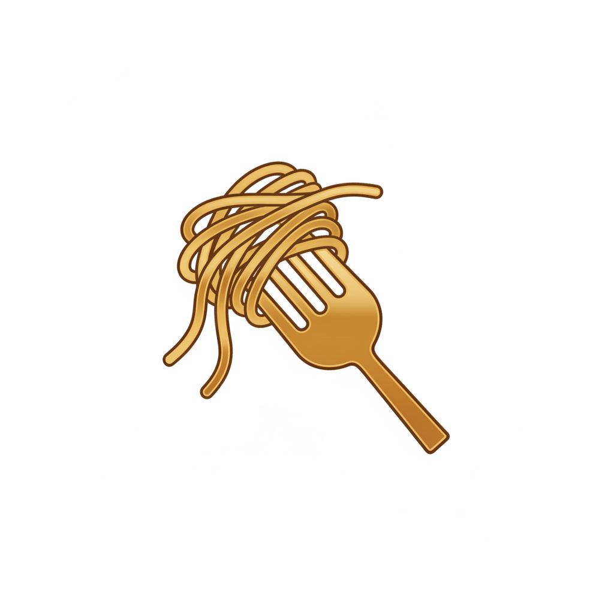
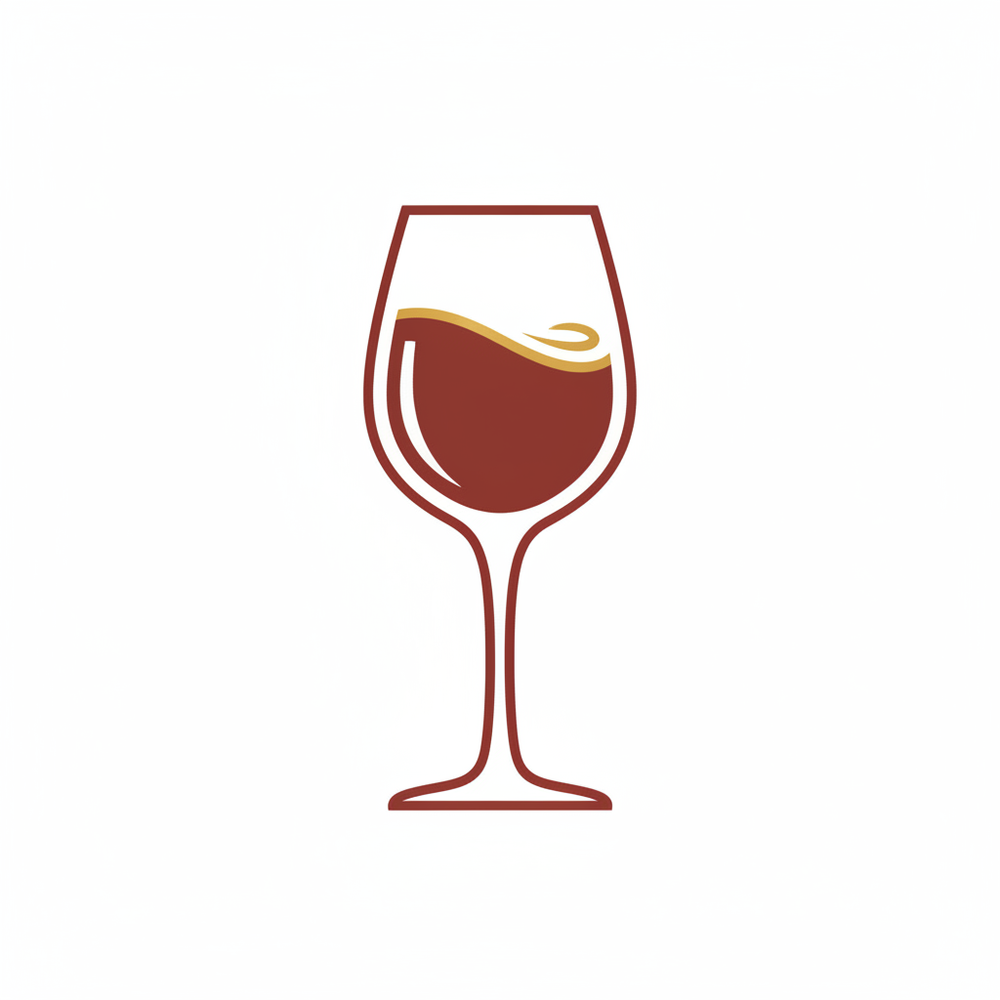

 ランチメニュー
11:00-14:00 / 手作りパスタをお手頃価格で
本日のパスタランチ
日替わりの手作りパスタ、本日のスープ、ドリンク付き
ミートソースパスタ
じっくり煮込んだ自家製ミートソースの定番メニュー
カルボナーラ
濃厚な卵黄とペコリーノチーズの本格カルボナーラ
マルゲリータピッツァ
トマト、モッツァレラ、バジルのシンプルな美味しさ
 ディナーメニュー
17:00-22:00 / 季節の食材を使った特別なコース
前菜盛り合わせ
季節の食材を使った5種の前菜プレート
本日の魚料理
新鮮な魚介をイタリアンスタイルで調理
牛ほほ肉の赤ワイン煮込み
じっくり煮込んだ柔らかな牛ほほ肉
シェフのおまかせコース
前菜からドルチェまで、その日の最高の食材でお届け
 ジビエ料理
ジビエ料理
秋田の自然が育んだジビエを本格イタリアンで
鹿肉のロースト
低温調理でしっとり仕上げた鹿肉に、赤ワインソースを添えて
猪肉のラグーパスタ
猪肉をじっくり煮込んだ濃厚ラグーソースの手打ちパスタ
ジビエの前菜盛り合わせ
ジビエを様々な調理法で楽しむ贅沢な一皿
ジビエコース
前菜からメインまで、ジビエを堪能するフルコース
ドリンク
料理に合わせたワインをご用意
グラスワイン
赤・白・スパークリングからお選びいただけます
ボトルワイン
イタリア各地のワインを取り揃えております
ソフトドリンク
自家製レモネード、ジュース各種
食後のカフェ
エスプレッソ、カプチーノ、カフェラテなど
※メニューは仕入れ状況により変更になる場合がございます
※アレルギーをお持ちの方はスタッフまでお申し付けください